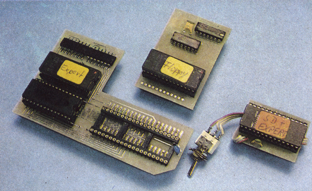
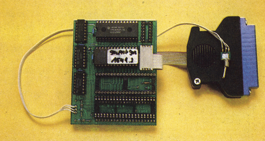
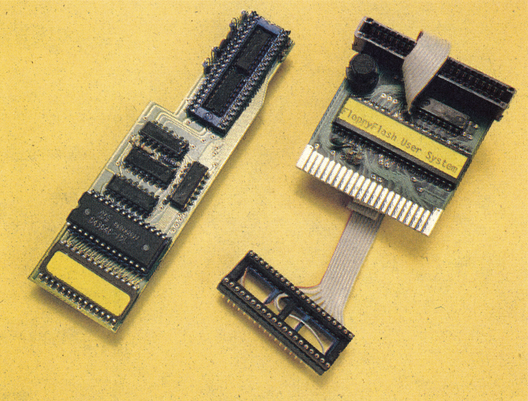
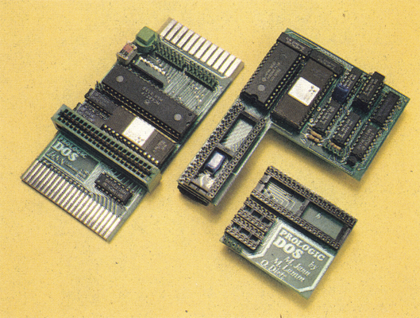
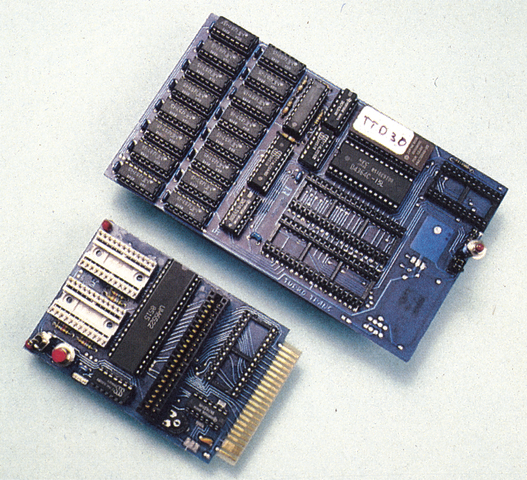

Wettlauf mit der Zeit
Mittlerweile gibt es derart viele Beschleunigungssysteme für die Diskettenstation 1541, daß der Käufer leicht den Überblick verliert. Der folgende Artikel hilft Ihnen bei der Kaufentscheidung weiter, indem er die aktuellsten Systeme einander gegenüberstellt.
Schnell sind sie alle, die Beschleuniger für die 1541. Die Palette reicht von einer Geschwindigkeitserhöhung um den Faktor 6 bis hin zum 200mal schnelleren »Turbolader«.
Der folgende Vergleichstest stellt einmal einige Systeme einander gegenüber. Es werden dabei sowohl die Stärken als auch die Schwächen der Speeder aufgedeckt.
Verlangt waren Beschleuniger, die Änderungen sowohl im Computer als auch im Laufwerk erfordern. Die Übertragung muß über ein zusätzliches Parallelkabel erfolgen, das Laufwerk und Computer miteinander verbindet.
Die Auswahlkriterien wurden aus folgenden Gründen getroffen:
- Mit diesem Auswahlsystem erfassen wir garantiert die zur Zeit aktuellsten und verbreitetsten Systeme.
- Die Beschleuniger, die die oben genannten Bedingungen erfüllen, sprechen alle ziemlich genau die gleiche Gruppe von Computeranwendern an und können aus diesem Grund leicht miteinander verglichen werden.
- Wir haben es bei unseren Testkandidaten mit ziemlich aktuellen Produkten zu tun, die sich fast alle auf dem neuesten Stand ihrer Entwicklung befinden.
- Der Aufwand beim Einbau der Systeme ist in etwa bei allen Speedern gleich, so daß sich Kaufentscheidungen nach den wichtigen Leistungsmerkmalen der Beschleunigungssysteme richten können.
Getestet wurden bei allen Systemen folgende Kriterien:
— Preis
— Lieferumfang
— Beschleunigung von Funktionen gegenüber einer Floppy 1541 in Originalform
— Verbesserung von Funktionen bezüglich des Originalgeräts
— Benutzerfreundlichkeit der einzelnen Systeme
— Kompatibilität der einzelnen Systeme zu Software, die sich augenblicklich auf dem Markt befindet
— Erweiterungen des Original-Betriebssystems des Computers und des Diskettenlaufwerks
Diese Testkriterien dürften sicherlich alle wichtigen Punkte einer Kaufentscheidung beinhalten.
Sie werden am Ende dieses Tests mit Bestimmtheit sagen können, welches System für Sie das richtige ist.
Nun aber zu unseren Kandidaten. Getestet wurden:
— Dolphin-Dos 2.0
— Professional DOS R4.0
— ProLogic-Dos
— SpeedDos Plus
— TurboAccess
— TurboTrans Plus 3.0
Die erste Teststufe beschäftigt sich mit der Geschwindigkeit des jeweiligen Systems, denn das ist schließlich der eigentliche Sinn dieser Erweiterungen.
Wir haben uns dazu spezielle Problemstellungen einfallen lassen, die insgesamt wohl die wichtigsten Aufgabengebiete eines Diskettenlaufwerks unter die Lupe nehmen.
Zu den Testaufgaben zählen natürlich die Messung der Lade- und Speichergeschwindigkeit. Zusätzlich wollen wir wissen, wie schnell eine Diskette mit VALIDATE »aufgeräumt« wird, in welcher Zeit der Speeder ein oder mehrere Programme von der Diskette löscht und wie hoch die Geschwindigkeit beim Umgang mit relativen Dateien ist. Natürlich spielt auch der Speicherplatz auf einer Diskette und die Dauer des Formatiervorgangs eine Rolle.
Neben diesen quantitativen Untersuchungen beschäftigen wir uns mit dem Aufbau eines Systems und seinem Befehlssatz in Floppystation und Computer. Wir untersuchen die Anwenderfreundlichkeit und die neuen Möglichkeiten eines Speeders. Es werden spezielle Eigenheiten sowohl positiver als auch negativer Art herausgestellt und der Gesamteindruck vom Lieferumfang bis hin zur Kompatibilität aufgezeigt.
Der »Urvater«
Zuerst soll uns einer der Urväter der Speeder mit Parallelkabel interessieren: SpeedDos Plus (Bild 1).

Wir haben SpeedDos Plus ganz bewußt in unsere Testreihe miteinbezogen, weil dieses Beschleunigungssystem infolge seiner frühen und jetzt auch noch andauernden Marktherrschaft Maßstäbe gesetzt hat. Viele Programme sind mittlerweile »SpeedDos-kompatibel«. Mehrere Speeder verwenden das »SpeedDos-Kabel« zur Datenübertragung, und oft hört man von Beschleunigern, die den »SpeedDos-Befehlssatz« und eine »SpeedDos-Tastenbelegung« besitzen.
Wir haben es also im wahrsten Sinne des Wortes mit einem »Urvater« der Parallelspeeder zu tun, der auch heute noch verkauft wird. Ein Vergleich mit den »Söhnen« dürfte aus diesem Grund sehr interessant sein, zumal SpeedDos Plus wegen seines Preis-/Leistungsverhältnisses nach wie vor sehr beliebt ist.
Der aktuelle Preis von SpeedDos Plus (die aktuelle und erweiterte Version des ursprünglichen SpeedDos) liegt bei 199,50 Mark. Dafür bekommen Sie eine kleine Platine, die im Diskettenlaufwerk anstelle des Original-DOS eingesteckt wird. Zusätzlich erhalten Sie ein Parallelkabel, das über einen Zwischensockel an die VIA 6522 angeschlossen wird. Im Computer wird ebenfalls eine kleine Platine untergebracht, die ein EPROM enthält. In dieses EPROM sind sowohl das SpeedDos Plus als auch das Original-Commodore-Betriebssystem integriert. SpeedDos Plus kann dabei jederzeit über einen Schalter ausgeschaltet werden, und der Computer befindet sich im »Urzustand«.
Leider lag uns bei unserem Testmuster keine aktuelle Bedienungsanleitung zu SpeedDos Plus bei. Wir können über deren Qualität also keine gültige Aussage machen.
Am Testanfang stand der wohl am meisten verwendete Befehl LOAD. Wir haben dazu eine Diskette hergestellt, die 50 Files mit je einem Block Länge enthält. Das 51. File ist dann unser Testfile mit genau 202 Blöcken Länge.
Diese Diskette erlaubt uns einen objektiven Test der Ladezeit, die inklusive der Suche im Directory gemessen wird.
In der Werbung sieht man zuweilen, daß nur die »reine« Ladezeit ohne Suche im Directory angegeben wird. Diese Angabe ist, so meinen wir, irreführend, da gerade diese Directory-Suche eine ganze Menge Zeit in Anspruch nimmt. Wir zählen also das Suchen des Files im Directory zur Ladezeit dazu.
Zeiten mit Suche im Directory
Nun aber wieder zu SpeedDos Plus. Es erreichte bei unserer Testdiskette eine Ladezeit von 24 Sekunden für 202 Blöcke und Suche im Directory. Das entspricht im Gegensatz zum Original-Betriebssystem des C 64 und der Floppystation 1541 einer Verbesserung um den Faktor 5,4. Normalerweise benötigt der C 64 für die 202 Blöcke genau 130 Sekunden.
Bei diesem Geschwindigkeitsfaktor darf man nicht vergessen zu erwähnen, daß SpeedDos die Files normalerweise mit einem anderen Sektorabstand auf die Diskette schreibt. Wir verwendeten jedoch eine »Originaldiskette«. Wird ein File unter SpeedDos Plus neu auf die Diskette geschrieben, so kann ein Geschwindigkeitsfaktor von mehr als dem Zehnfachen der Originalgeschwindigkeit erreicht werden.
Natürlich darf auch der SAVE-Befehl nicht vergessen werden. SpeedDos Plus benötigte zum Speichern von 202 Blöcken auf die Diskette hinter 50 vorhandene Files genau 103 Sekunden. Das entspricht gegenüber der Geschwindigkeit des Original-DOS von 140 Sekunden einem Geschwindigkeitsfaktor von 1,4 beim Speichern.
Nach dem SAVEn wollten wir noch wissen, wie schnell ein File unter SpeedDos Plus mit SCRATCH gelöscht werden kann. Wir haben 27 Sekunden gemessen, wobei das Original-Betriebssystem mit 26 Sekunden etwa die gleiche Geschwindigkeit besitzt. Man kann also davon ausgehen, das die Löschroutine des DOS von SpeedDos Plus nicht geändert wurde. Das bestätigt uns auch unsere zweite Testmessung in Sachen SCRATCH. Hier werden 50 Files von einer Diskette gelöscht, die jeweils einen einzigen Block lang sind.
SpeedDos Plus benötigte für diese Aufgabe 72 Sekunden. Das Original-DOS schlägt mit 79 Sekunden zu Buche, wobei der Unterschied sicherlich auf die schnellere Bewegung des Schreib-/Lesekopfes unter SpeedDos zurückzuführen ist.
Um einen Wert für die Geschwindigkeit des Speeders bei der Behandlung von Dateien zu bekommen, haben wir das Erstellen einer relativen Datei gemessen. Es wurde dabei eine Datei eröffnet, die aus 200 Datensätzen besteht, wobei jeder Datensatz eine Länge von 140 Byte besitzt. Die Datei wurde bei unserem Test eröffnet und sämtliche 200 Datensätze angelegt. SpeedDos Plus benötigte für diese Aufgabe 59 Sekunden. Das Original-DOS der Floppy 1541 erreicht mit 60 Sekunden praktisch die gleiche Geschwindigkeit.
Auch im Löschen der relativen Datei waren sich SpeedDos Plus und das Original-Betriebssystem »einig«. Hier benötigten beide genau 16 Sekunden.
Die bisherigen Tests untersuchten die Floppystation jeweils unter durchschnittlichen Bedingungen, wie sie im Betrieb oft vorkommen. Wir wollten jedoch auch eine Extremsituation simulieren und so ließen wir alle Kandidaten eine vollständig gefüllte Diskette (»0 BLOCKS FREE« und 144 Einträge im Directory) mit dem Befehl VALIDATE »aufräumen«, wobei einzelne Files auf dieser Testdiskette vollkommen verstreut angeordnet waren.
Das Original-Betriebssystem der Floppy 1541 benötigte für diesen Durchlauf sage und schreibe 230 Sekunden (das sind fast vier Minuten).
Monitor eingebaut
SpeedDos Plus schlug sich hier wacker mit nur 168 Sekunden. Das sind gut zwei Drittel der Zeit des Original-DOS.
Natürlich durfte bei unseren Messungen auch das Formatieren einer Diskette nicht zu kurz kommen. Die Dauer dieses Vorgangs ist wohl das zweithäufigste Ärgernis, das einem Commodore-Anwender widerfährt.
SpeedDos Plus arbeitet auf der Diskette mit 35 Spuren und benötigt zum Formatieren 23 Sekunden. Zum Vergleich: Das Original-Commodore-DOS läßt sich für den gleichen Vorgang gut 85 Sekunden Zeit.
Von der Geschwindigkeit der 1541 einmal abgesehen, bietet SpeedDos Plus aber noch weitere Vorzüge. So beinhaltet das Betriebssystem zwar keine RS232-Routinen mehr, dafür existiert aber beispielsweise ein eingebauter kleiner Maschinensprachemonitor. Am User-Port wurde softwaremäßig eine Centronics-kompatible Schnittstelle herausgeführt, an die jeder handelsübliche Drucker mit einer entsprechenden Schnittstelle angeschlossen werden kann (zum Beispiel Epson, Fujitsu, Star und andere). Viele auf dem Markt vorhandene Programme für Drucker unterstützen diese Schnittstelle am User-Port oder haben sogar eine eigene eingebaut, so daß ein Drucker-Interface für den seriellen Bus bei den meisten Anwendungen nicht mehr nötig ist. Lediglich wenn Sie Ausdrucke mit den Commodore-spezifischen Sonderzeichen anfertigen wollen, müssen Sie auf ein entsprechendes Interface zurückgreifen.
Kabelprobleme
Einen einzigen Nachteil hat die Centronics-kompatible Schnittstelle am User-Port aber dennoch: Wie schon oben erwähnt, wird am User-Port auch das Parallelkabel für das Diskettenlaufwerk angeschlossen. Sie haben also unter Umständen zwei Stecker für einen Anschluß. Um den Drucker und die Floppystation gleichzeitig betreiben zu können, ist ein Adapter notwendig, der am User-Port zwei Anschlüsse zur Verfügung stellt.
Zusätzlich zu den schon erwähnten Erweiterungen stellt SpeedDos Plus noch ein paar nützliche Tastenfunktionen zur Verfügung. So sind sämtliche Funktionstasten mit wichtigen Befehlen belegt, wobei auch das softwaremäßige Abschalten von SpeedDos Plus möglich ist. Die Tabelle 1 zeigt Ihnen noch einmal alle Testdaten und die wichtigsten Funktionen auf einen Blick.
| SpeedDos Plus | ||
|---|---|---|
| Testaufgaben: | gemessene Zeiten: | |
| LOAD (202 Blöcke) | 24 Sekunden | |
| SAVE (202 Blöcke) | 103 Sekunden | |
| SCRATCH (202 Blöcke) | 27 Sekunden | |
| SCRATCH (REL-Datei) | 16 Sekunden | |
| SCRATCH (50 Files à 1 Block) | 72 Sekunden | |
| REL-Datei erstellen (200 Datensätze à 140 Zeichen) | 59 Sekunden | |
| Diskette validieren | 168 Sekunden | |
| Diskette formatieren | (35 Spuren) | 23 Sekunden |
| (40 Spuren) | – | |
| Technische Daten des Beschleunigungssystems: | ||
| Preis: | 199,50 Mark | |
| Computertyp: | C 64 | |
| Diskettenlaufwerk: | 1541 | |
| Kapazität der Diskette | (Spuren) | 35 Spuren |
| (Sektoren insgesamt) | 664 Sektoren | |
| Speicher in der Floppy | 2 KByte | |
| Anschluß des Parallelkabels | User-Port | |
| Taktfrequenz des Speeders | 1 MHz | |
| Speeder mit Schalter abschaltbar? | ||
| Floppy | nein | |
| Computer | ja | |
Wichtige zusätzliche Funktionen gegenüber dem Original-Betriebssystem:
— Centronics-kompatible Schnittstelle eingebaut (User-Port)
— Directoryanzeige ohne Programmverlust
— Funktionstasten belegt
— Hardcopy von Textbildschirm
— eingebauter Maschinensprache-Monitor
— OLD-Befehl zum Zurückholen eines gelöschten Basic-Programms
Etwa zur gleichen Zeit wie SpeedDos Plus kam auch ein anderes Beschleunigungssystem auf den Markt: TurboAccess.
TurboAccess weist von der Konzeption her ein paar größere Unterschiede zu SpeedDos Plus auf. Das wird schon am Lieferumfang deutlich. Für den Preis von 199 Mark bekommt der Anwender eine Platine für das Diskettenlaufwerk, die durch ein Kabel mit einer weiteren Platine für den Expansion-Port des Computers verbunden ist. Der User-Port bleibt bei TurboAccess also frei. Im Computer muß unter das Betriebssystem ein kleiner Adaptersockel gesetzt werden, der über ein Kabel mit der Platine im Expansion-Port verbunden ist.
Auf der Erweiterungsplatine am Computer befindet sich unter anderem ein Schalter. Mit diesem kann TurboAccess hardwaremäßig ausgeschaltet und das Original-Betriebssystem sowohl im Diskettenlaufwerk als auch im Computer wieder eingeschaltet werden.
Der Konkurrent
TurboAccess wurde natürlich unter den gleichen Testbedingungen untersucht wie SpeedDos Plus. Dabei zeigten sich leichte Zeitvorteile für TurboAccess. Das Laden eines 202-Block-Files mit 50 Programmen, die im Directory davor stehen, dauert 23 Sekunden. Gespeichert werden die 202 Blöcke in 103 Sekunden. Nach dem Speichern kam das Löschen. Hier benötigte TurboAccess 27 Sekunden. Das Erstellen unserer relativen Testdatei dauerte alles in allem 57 Sekunden. Gelöscht wurde die Datei in nur 14 Sekunden. Der Löschtest mit 50 1-Block-Files wurde von TurboAccess in nur 67 Sekunden bewältigt, und sogar für das Validieren der Testdiskette benötigte TurboAccess weniger Zeit als SpeedDos Plus: nämlich ganze 155 Sekunden. Das Formatieren geht bei TurboAccess trotz eines eingebauten Verify sehr flott. Es dauerte in unserem Test nicht länger als 18 Sekunden und dürfte damit allen Ansprüchen genügen. So schnell sind normalerweise noch nicht einmal Personal Computer. Das Laden von unserer Testdiskette bedeutet übrigens, wie schon bei SpeedDos Plus, nicht, daß es nicht noch schneller geht. Auch bei TurboAccess wird nämlich beim Speichern der Sektorabstand auf der Diskette verändert, so daß Files, die unter TurboAccess gespeichert wurden, noch sehr viel schneller wieder geladen werden können. Der Geschwindigkeitsfaktor beträgt auch hier etwa 10.
Das Betriebssystem von TurboAccess beinhaltet zwar ähnliche Funktionen wie SpeedDos Plus. Es wurde jedoch völlig anders konzipiert. So verzichteten die Entwickler von TurboAccess bewußt auf die Belegung der Funktionstasten, da gerade diese praktische Belegung mit manchen Programmen Probleme bekommt. Bei TurboAccess werden die Zusatzfunktionen allesamt über die Tastenkombination <CTRL+Taste> aufgerufen.
Wie schon SpeedDos Plus, so enthält auch TurboAccess eine Centronics-kompatible Schnittstelle am User-Port. Der Anschluß eines Druckers macht hier jedoch keine Probleme, da die Floppystation, wie schon erwähnt, am Expansion-Port des Computers angeschlossen wird. Auch Befehlserweiterungen, wie Laden aus dem Directory oder der OLD-Befehl, der ein gelöschtes Basic-Programm zurückholt, sind in TurboAccess eingebaut. Der Mini-Maschinensprachemonitor von SpeedDos Plus fehlt in der Grundversion von TurboAccess. Das ist Absicht, da die Entwickler von TurboAccess auf vorhandene RS232-Routinen im Betriebssystem Wert legen und diese sonst hätten entfernen müssen.
Die Hardware von TurboAccess ist ungleich aufwendiger als die von SpeedDos Plus und macht auch qualitätsmäßig einen besseren Eindruck. Die Lösung mit dem Übertragungskabel am Expansion-Port ist technisch auf jeden Fall besser. Sie hat sich jedoch leider auf dem Markt nicht so durchsetzen können wie die SpeedDos-Variante.
Technisch gesehen hat TurboAccess also einen Vorteil gegenüber SpeedDos Plus. Das betrifft sowohl die höhere Qualität der Hardware als auch die Möglichkeit, ein zweites Laufwerk im Parallelbetrieb an das vorhandene System anzuschließen. Die Bedienerfreundlichkeit des Systems ist jedoch bei SpeedDos besser. Hier macht sich die Belegung der Funktionstasten bemerkbar, an die man sich sehr schnell gewöhnt und die man auf anderen Computersystemen leicht vermißt. Die Tabelle 2 zeigt Ihnen alle wichtigen Testdaten und Funktionen von TurboAccess.
| TurboAccess | ||
|---|---|---|
| Testaufgaben: | gemessene Zeiten: | |
| LOAD (202 Blöcke) | 23 Sekunden | |
| SAVE (202 Blöcke) | 103 Sekunden | |
| SCRATCH (202 Blöcke) | 25 Sekunden | |
| SCRATCH (REL-Datei) | 14 Sekunden | |
| SCRATCH (50 Files à 1 Block) | 67 Sekunden | |
| REL-Datei erstellen (200 Datensätze à 140 Zeichen) | 57 Sekunden | |
| Diskette validieren | 155 Sekunden | |
| Diskette formatieren | (35 Spuren) | 18 Sekunden |
| (40 Spuren) | 20 Sekunden | |
| Technische Daten des Beschleunigungssystems: | ||
| Preis: | 199 Mark | |
| Computertyp: | C 64, C 128 | |
| Diskettenlaufwerk: | 1541 | |
| Kapazität der Diskette | (Spuren) | 35/40 Spuren |
| (Sektoren insgesamt) | 664/749 Sektoren | |
| Speicher in der Floppy | 2 KByte | |
| Anschluß des Parallelkabels | Expansion-Port | |
| Taktfrequenz des Speeders | 1 MHz | |
| Speeder mit Schalter abschaltbar? | ||
| Floppy | ja | |
| Computer | ja | |
Wichtige zusätzliche Funktionen gegenüber dem Original-Betriebssystem:
— Centronics-kompatible Schnittstelle eingebaut (User-Port)
— Directoryanzeige ohne Programmverlust
— Hardcopy von Textbildschirm
— OLD-Befehl zum Zurückholen eines gelöschten Basic-Programms
— verschiedene Reset-Routinen zum Überspringen der Modul-Kennung und zum Erhalten der Variablen und der Basic-Programme
Das ausgereifte System
Unser nächster Kandidat ist Dolphindos 2.0 (Bild 2). Hierbei handelt es sich, wie auch bei den folgenden Beschleunigern, um ein System der zweiten Generation. Gemeint ist damit der technische Aufwand, der mit den Speedern getrieben wird.

Während SpeedDos Plus und TurboAccess lediglich ein neues Betriebssystem und ein Zusatzkabel in der Floppystation unterbringen, arbeiten die neuen Speeder mit zusätzlichem Speicher in der Floppystation und äußerst ausgefeilten Tricks zur Beschleunigung sämtlicher Funktionen des Laufwerks.
Dolphindos 2.0 ist in dieser Hinsicht eine kleine Revolution auf dem Markt der Floppy-Speeder. Es kostet als Komplettsystem nur 198 Mark. Dieses »nur« in der Preisangabe wird sich bei den anschließenden Besprechungen klären, es ist jedoch in jedem Fall angebracht.
Als Komplettsystem bekommen Sie bei Dolphindos 2.0 eine Platine, die in die Floppystation eingesteckt wird. Auf dieser Platine befinden sich unter anderem zwei Steckanschlüsse für Parallelkabel. Dolphindos 2.0 erlaubt es also dem Anwender, zwei Laufwerke im Parallelbetrieb zu verwenden, wobei das eine mit der Gerätenummer 8 und das andere mit der 9 angesprochen wird.
Für den Computer erhält der Anwender ein EPROM auf einer Adapterplatine, das wahlweise ein Umschalten zwischen dem Original-Betriebssystem und dem Dolphindos 2.0 erlaubt. Es ist auf diese Art und Weise möglich, den Originalzustand des Computers wiederherzustellen, wenn das nötig werden sollte. In der Floppystation existiert ein solcher Umschalter ebenfalls, so daß auch das Diskettenlaufwerk auf Originalbetrieb zurückgeschaltet werden kann.
Zusätzlich zur Hardware, die außerdem noch aus einem Verbindungskabel besteht, das am User-Port eingesteckt wird, bekommt der Käufer noch ein kleines Heftchen, das auf 20 Seiten ausführlich mit der Bedienung von Dolphindos 2.0 vertraut macht. Auch der Einbau des Systems ist sorgfältig beschrieben. An der Anleitung gibt es vom Inhalt her also nichts Wesentliches zu bemängeln. Lediglich zusammengeheftet könnte es noch sein, da es einem sonst passieren kann, daß sich alle Teile der Anleitung in unterschiedlicher Himmelsrichtung voneinander »entfernen«.
Auf einer beigefügten Diskette bekommt der Anwender zusätzlich noch zwei Kopierprogramme, die die Geschwindigkeit von Dolphindos 2.0 ausnutzen und vor allem einzelne Files blitzschnell kopieren.
Nun aber zu den Meßergebnissen mit unseren Testdisketten. Es zeigt sich hier natürlich sofort, mit was für einem »Kaliber« wir es bei den Speedern der neueren Generation zu tun haben. Da diese Beschleunigungssysteme den Speicher der Floppystation erweitern, sind sie in der Lage, jeweils eine gesamte Spur einer Diskette auf einmal einzulesen. Daß diese Maßnahme stark zur Beschleunigung beiträgt, vor allem wenn man weiß, daß zusätzlich auch das ROM um acht KByte Speicher erweitert wurde, ist unschwer einzusehen.
So dauert das Laden von 202 Blöcken inklusive Suche im Directory auch nur mehr 5,5 Sekunden. Es macht einem direkt Spaß, der Diskettenstation bei der Arbeit zuzusehen. Wehmütig wird man erst, wenn ein »gepacktes« Programm in den Speicher des Computers geladen wird. Bei diesen »zusammengestauchten« Programmen dauert das »Entpacken« in der Regel länger als das Laden von der Diskette.
Auch beim Speichern konnte Dolphindos 2.0 voll und ganz überzeugen. In nur 10 Sekunden werden 202 Blöcke auf die Diskette gespeichert. Wir erinnern uns: Das Original-Betriebssystem des C 64 benötigt ganze 140 Sekunden. Dolphindos 2.0 ist also 14mal schneller.
Das Löschen der 202 Blöcke von der Diskette ist ebenfalls kein Problem. In nur 4,5 Sekunden ist von den 202 Blöcken nichts mehr übrig und die Diskette strahlt uns wieder ihr »614 BLOCKS FREE« entgegen. (Es befinden sich noch 50 Files mit je einem Block Länge auf der Diskette, die wir vor den 202 Blöcken gespeichert hatten, um die Suche im Directory als Zeitfaktor miteinbeziehen zu können.)
Auch das Erstellen einer relativen Datei mit 200 Datensätzen à 140 Zeichen geht unter Dolphindos 2.0 erstaunlich schnell. Nach 20 Sekunden war die ganze Arbeit getan, und unsere relative Datei war angelegt.
Zum Löschen der relativen Datei waren ganze 3,5 Sekunden notwendig. Direkt im Anschluß daran haben wir Dolphindos 2.0 auch 50 Files mit je einem Block Länge löschen lassen. Das Ergebnis ist zwar im Vergleich nicht so spektakulär, es kann sich jedoch sehen lassen: 51 Sekunden für den gesamten Löschvorgang.
Den Vogel abgeschossen hat Dolphindos 2.0 im Test der Validate-Geschwindigkeit. Wir hatten dafür eine Diskette vorbereitet, die bis auf das letzte Byte gefüllt war. Das heißt: 144 Einträge im Directory und »0 BLOCKS FREE«, wobei viele Files kreuz und quer auf der Diskette standen, um viele Bewegungen des Schreib-/Lesekopfes zu provozieren.
Dolphindos 2.0 hat diese Diskette in sage und schreibe 20 Sekunden »abgegrast«. Das ist mit Abstand die schnellste Zeit, die ein Speeder auf der Diskette bisher erreicht hat. Zum Vergleich: Das Original-Betriebssystem der Floppy 1541 war fast vier (4!) Minuten am Arbeiten.
35 und 40 Spuren
Eine weitere Besonderheit von Dolphindos 2.0 ist die Tatsache, daß der Anwender zwischen dem Diskettenformat mit 35 oder dem Format mit 40 Spuren wählen kann. Läßt man eine Diskette mit 35 Spuren formatieren, so ist das nach 19 Sekunden geschehen, und die üblichen 166 KByte Speicherplatz stehen dem Anwender zur Verfügung.
Bei einer Formatierung auf 40 Spuren hingegen ist Dolphindos 2.0 21 Sekunden beschäftigt. Danach »lächeln« einen jedoch »749 BLOCKS FREE« an. Das entspricht einer Speicherkapazität von 187,25 KByte bei voller Datensicherheit. Schließlich gibt es offiziell keine 35-Spur-Laufwerke, sondern lediglich 40-Spur-Laufwerke, und dazu zählt auch die 1541-Floppystation. Der Anwender braucht also nicht zu befürchten, daß sich die Floppy 1541 mit dieser Anzahl an Spuren »übernimmt«.
Super-Betriebssystem
Wir haben von Dolphindos 2.0 zwar jetzt allerlei Sensationszeiten gehört; das Beste an diesem Betriebssystem ist aber sicherlich das Kernel im Computer. Hier wurde lange entwickelt und herumgefeilt, mit dem Ergebnis, daß wir in diesem Testbericht bei Dolphindos 2.0 sicherlich von einem ausgereiften System sprechen können.
Das Wort ausgereift steht dabei jedoch nicht nur für die Fehlerfreiheit, es soll vielmehr die sehr durchdachte Bedienungsfreundlichkeit zum Ausdruck bringen. Kein anderes Betriebssystem konnte uns in dieser Hinsicht bisher so begeistern.
Das fängt schon damit an, daß der Käufer bei Dolphindos 2.0 nicht befürchten muß, heute ein System zu kaufen, das morgen schon veraltet ist. Während andere Hersteller ihre Systeme noch weiterentwickeln, wobei sich der Käufer unter Umständen öfters um Updates bemühen muß, erhält er mit Dolphindos 2.0 ein ausgereiftes System: Dolphindos 2.0 ist laut Firmenaussage fertig entwickelt.
Arbeitet man mit Dolphindos 2.0, so fällt sofort die Ähnlichkeit mit SpeedDos Plus ins Auge. In der Tat haben sich die Entwickler in den Grundzügen an SpeedDos Plus orientiert, da SpeedDos Plus sehr verbreitet ist und einige Programme sogar nur unter diesem System lauffähig sind. Ein Beispiel ist »FCOPY III«. Dieses schnelle Backup-Programm verwendet spezielle Einsprungadressen von SpeedDos Plus, die absichtlich unter Dolphindos 2.0 nachempfunden wurden.
Dolphindos 2.0 bietet aber noch einiges mehr. Die Centronics-kompatible Schnittstelle am User-Port ist dabei fast nicht mehr der Erwähnung wert; sie gehört bei Speedern mittlerweile zur Standardausrüstung.
Vielfalt mit Funktionstasten
Es existiert ein eingebauter Maschinensprache-Monitor zum Ansehen, Laden und Speichern von Speicherbereichen und eine Funktionstastenbelegung. Neben der Belegung von 12 (!) Funktionstasten (die Funktionstasten 9 bis 12 werden zusammen mit der Commodore-Taste (CBM) aufgerufen) sind auch noch mehrere Tasten zusammen mit der <CTRL>-Taste belegt. Hier existieren Funktionen wie Bildschirm-Reset, Repeatfunktion der Tasten an/aus, Bildschirmzeile vor/hinter dem Cursor löschen und so weiter. Nebenbei wurden auch noch zusätzliche Befehle im Betriebssystem integriert. Dabei sind zum Beispiel die Umrechnung von Zahlensystemen oder der OLD-Befehl, der das Zurückholen eines Basic-Programms nach dem Löschen erlaubt.
Da der Kassettenpuffer nicht mehr benötigt wird, legte man unter Dolphindos 2.0 die Belegung der Funktionstasten in diesen Bereich. Es wird dem Anwender so ermöglicht, die Tasten ganz bequem umzudefinieren. Hat man es mit Programmen zu tun, die den Kassettenpuffer in gelöschtem Zustand benötigen, so genügt die Tastenkombination <CTRL+X>, und die Funktionstasten werden abgeschaltet und der Kassettenpuffer mit Nullen gefüllt. Danach sind die betreffenden Programme garantiert lauffähig. Tabelle 3 zeigt noch einmal die Ergebnisse unseres Tests.
| Dolphindos 2.0 | ||
|---|---|---|
| Testaufgaben: | gemessene Zeiten: | |
| LOAD (202 Blöcke) | 5.5 Sekunden | |
| SAVE (202 Blöcke) | 10 Sekunden | |
| SCRATCH (202 Blöcke) | 4.5 Sekunden | |
| SCRATCH (REL-Datei) | 3.5 Sekunden | |
| SCRATCH (50 Files à 1 Block) | 3.5 Sekunden | |
| REL-Datei erstellen (200 Datensätze à 140 Zeichen) | 20 Sekunden | |
| Diskette validieren | 20 Sekunden | |
| Diskette formatieren | (35 Spuren) | 19 Sekunden |
| (40 Spuren) | 21 Sekunden | |
| Technische Daten des Beschleunigungssystems: | ||
| Preis: | 198 Mark | |
| Computertyp: | C 64, C 128 | |
| Diskettenlaufwerk: | 1541 | |
| Kapazität der Diskette | (Spuren) | 35/40 Spuren |
| (Sektoren insgesamt) | 664/749 Sektoren | |
| Speicher in der Floppy | 10 KByte | |
| Anschluß des Parallelkabels | User-Port | |
| Taktfrequenz des Speeders | 1 MHz | |
| Speeder mit Schalter abschaltbar? | ||
| Floppy | ja | |
| Computer | ja | |
Wichtige zusätzliche Funktionen gegenüber dem Original-Betriebssystem:
— Centronics-kompatible Schnittstelle eingebaut (User-Port)
— Directoryanzeige ohne Programmverlust
— Hardcopy vom Textbildschirm
— OLD-Befehl zum Zurückholen eines gelöschten Basic-Programms
— verschiedene Reset-Routinen zum Überspringen der Modul-Kennung und zum Erhalten der Variablen und der Basic-Programme
— Maschinensprache-Monitor eingebaut
— Funktionstasten belegt (12 Funktionstasten)
— Bildschirm-Reset auf Tastendruck
— Maschinenprogramme mit <SHIFT+RUN/STOP> laden und starten
— Modifizierter SYS-Befehl mit möglichen Hex-Eingaben
— Umrechnung zwischen verschiedenen Zahlensystemen
— (Abschaltbare) Auto-Repeatfunktion aller Tasten
— Speeder in Stufen zurückschaltbar (für höhere Kompatibilität)
— Freie Belegung der Funktionstasten durch Anwender möglich
Sie sehen also, daß die Entwickler an Dolphindos 2.0 intensiv gearbeitet haben, oder kennen Sie einen anderen Floppy-Speeder, bei dem Sie Maschinenprogramme mit <SHIFT+RUN/STOP> laden und starten (!) können?
Neben Speedern der ersten Generation und Speedern der zweiten Generation haben wir Ihnen auch noch etwas Besonderes in unserem Vergleichstest anzubieten. Es handelt sich um einen Speeder der zweiten Generation für Speeder der ersten Generation.
Der Speeder für den Speeder
Das Professional Dos R4.0 (Bild 3) nutzt die Tatsache für sich aus, daß die neuen Beschleuniger für die Floppystation in der Regel um einiges schneller und komfortabler sind als die älteren Systeme, wie zum Beispiel SpeedDos Plus oder TurboAccess.

Es wird dem Anwender daher angeboten, sein altes System aufzurüsten oder gleich ein neues Komplettsystem zu kaufen. Dabei sind im Augenblick ein Aufrüstsatz für SpeedDos und Floppy-Flash erhältlich. Ein Aufrüstsatz für TurboAccess ist nach Auskunft von Mikrotronic ebenfalls zu haben.
Es stand uns für unseren Test das SpeedDos Plus-System zur Verfügung. Die Aufrüstsätze kosten für SpeedDos Plus und Floppy-Flash jeweils 169 Mark für die 35-Spur-Version und 189 Mark für die 35/40-Spur-Version. Die Erweiterung für TurboAccess ist jeweils um 10 Mark teurer.
Bei dem System erhalten Sie eine Platine für die Floppystation und ein neues Kernel für den Computer, in dem sowohl das Original- als auch das neue Betriebssystem enthalten sind. Zum Lieferumfang bei der Floppy-Flash-Version gehört außerdem eine Diskette, die ein schnelles File-Kopierprogramm und zwei EPROM-Generatoren enthält. Die EPROM-Generatoren erlauben es, entweder ein Betriebssystem mit ein- oder eines mit ausgeschaltetem Bildschirm beim Laden in ein EPROM zu »brennen«. Das Betriebssystem mit ausgeschaltetem Bildschirm ist dabei in den Diskettenfunktionen noch geringfügig schneller. Getestet haben wir Professional Dos R4.0 mit eingeschaltetem Bildschirm, da sämtliche anderen Testkandidaten ebenfalls damit arbeiten.
Neben dem erwähnten Lieferumfang erhielten wir noch ein paar Seiten Anleitung, die leider nicht in Heftform vorhanden waren. Es zeigt sich hier, wie leider sehr häufig, daß bei einem der wichtigsten Punkte von Herstellern immer wieder an falscher Stelle gespart wird. In der Anleitung, die zumindest den Einbau des Systems gut beschreibt, finden Produktinformationen und Bezugsquellen fast mehr Platz als die eigentliche Beschreibung des Systems.
Nun aber zum Test von Professional Dos R4.0. Beim Laden von 202 Blöcken mit der Suche im Directory wurden 5,5 Sekunden gemessen. Das ist eine sehr gute Zeit, die deutlich den Unterschied älterer und neuerer Beschleunigungssysteme aufzeigt. Das Speichern des 202-Block-Testfiles dauerte mit 10 Sekunden genauso lang wie bei anderen neuen Systemen. Beim Löschen des Files ergab sich eine Meßzeit von 7,4 Sekunden.
Das Einrichten unserer relativen Testdatei dauerte unter Professional Dos R4.0 nur mehr 12 Sekunden. Dolphindos 2.0 wird hier also um mehr als 7 Sekunden unterboten. Zum Löschen der betreffenden Datei benötigte Professional Dos R4.0 5 Sekunden. Das Löschen der 50 Testdateien dauerte 59 Sekunden, womit sich Professional Dos R4.0 im Mittelfeld bewegte.
Unsere Spezialdiskette für den VALIDATE-Befehl ergab eine Zeit von 118 Sekunden für das »Aufräumen«. Fairerweise muß an dieser Stelle vielleicht gesagt werden, daß das Professional Dos R4.0 in der Lage ist, die Systemtaktfrequenz der Floppy 1541 auf 2 MHz zu erhöhen. Das passiert softwaremäßig immer dann, wenn zeitkritische Abläufe begonnen werden. Dolphindos 2.0 arbeitet grundsätzlich mit einem Megahertz und ist deshalb bei gewissen Funktionen zwangsläufig im Nachteil, wie auch alle anderen Speeder, die die Taktfrequenz der Diskettenstation nicht erhöhen.
Auch Professional Dos R4.0 ist in der Lage, entweder mit 35 oder mit 40 Spuren auf der Diskette zu arbeiten. Das Formatieren von 35 Spuren dauert dabei 21 Sekunden. Für 40 Spuren ist der Speeder 24 Sekunden lang beschäftigt. Auch hier stehen dann, wie bei Dolphindos 2.0 auch, 664 beziehungsweise 749 Blöcke zur Verfügung.
Die Funktionen im Betriebssystem des Computers sind bei Professional Dos R4.0 auf das Wesentliche beschränkt. Es existiert eine Centronics-kompatible Schnittstelle am User-Port und eine OLD-Funktion zum Zurückholen von gelöschten Basic-Programmen, eine Tastenkombination zum Starten einer Hardcopy des Textbildschirms und eine Belegung der Funktionstasten. Zusätzlich sind mehrere Reset-Routinen implementiert, die das Umgehen von Autostart-Programmen erlauben.
Das Professional DOS R4.0 besitzt zwar keinen eingebauten Mini-Maschinensprache-Monitor. Dafür sind die RS232-Routinen des Betriebssystems noch vorhanden. Lediglich die Routinen für den Betrieb einer Datasette wurden entfernt. Das dürfte vor allem für alle jene Anwender von Interesse sein, die sich mit DFÜ beschäftigen. Tabelle 4 zeigt noch einmal die Testergebnisse und eingebauten Funktionen auf einen Blick.
| Professional Dos R4.0 | ||
|---|---|---|
| Testaufgaben: | gemessene Zeiten: | |
| LOAD (202 Blöcke) | 5.5 Sekunden | |
| SAVE (202 Blöcke) | 10 Sekunden | |
| SCRATCH (202 Blöcke) | 7.4 Sekunden | |
| SCRATCH (REL-Datei) | 5 Sekunden | |
| SCRATCH (50 Files à 1 Block) | 59 Sekunden | |
| REL-Datei erstellen (200 Datensätze à 140 Zeichen) | 12 Sekunden | |
| Diskette validieren | 118 Sekunden | |
| Diskette formatieren | (35 Spuren) | 21 Sekunden |
| (40 Spuren) | 24 Sekunden | |
| Technische Daten des Beschleunigungssystems: | ||
| Preis: | 189 Mark | |
| Computertyp: | C 64, C 128 | |
| Diskettenlaufwerk: | 1541 | |
| Kapazität der Diskette | (Spuren) | 35/40 Spuren |
| (Sektoren insgesamt) | 664/749 Sektoren | |
| Speicher in der Floppy | 10 KByte | |
| Anschluß des Parallelkabels | User-Port | |
| Taktfrequenz des Speeders | 1/2 MHz | |
| Speeder mit Schalter abschaltbar? | ||
| Floppy | nein | |
| Computer | ja | |
Wichtige zusätzliche Funktionen gegenüber dem Original-Betriebssystem:
— Centronics-kompatible Schnittstelle eingebaut (User-Port)
— Directoryanzeige ohne Programmverlust
— Maschinensprache-Monitor eingebaut
— Funktionstasten belegt
— Modifizierter SYS-Befehl mit möglichen Hex-Eingaben
— Umrechnung zwischen verschiedenen Zahlensystemen
— Speeder in Stufen zurückschaltbar (für höhere Kompatibilität)
— Umschaltung der Taktfrequenz in der Floppystation
Der »Aufwendige«
Der nächste Kandidat unserer Testreihe ist ProLogic-Dos (Bild 4). Für 298 Mark bekommen Sie zwei Platinen, die in der Floppystation 1541 untergebracht werden. Dazu gibt es eine Platine, die in den Expansion-Port des Computers eingesteckt wird. Neben diesen drei Platinen erhält man ein ausführliches 30seitiges Handbuch, das von den bisher getesteten Produkten den besten Eindruck macht. Es erläutert ausführlich den Einbau und die Bedienung des Systems, wobei festzustellen ist, daß ProLogic-Dos infolge seiner höheren Komplexität (größerer Hardware-Aufwand) von allen Speedern am kompliziertesten einzubauen ist.

ProLogic-Dos arbeitet in der Floppy 1541 teilweise mit 2 MHz Taktfrequenz und ist deshalb natürlich auch technisch allen anderen bisher getesteten Systemen, mit Ausnahme des Professional Dos R4.0, überlegen. Man darf also auf die Testzeiten gespannt sein.
Das Laden eines Programms mit 202 Blöcken Länge dauert wie schon bei Dolphindos 2.0 und Professional Dos R4.0, 5,5 Sekunden. Zum Speichern des gleichen Programms benötigte ProLogic-Dos, wie schon Dolphindos 2.0, 10 Sekunden. Erstaunlicherweise ist ProLogic-Dos beim Löschen von 202 Blöcken langsamer als Dolphindos 2.0. Hier wurden ganze 7 Sekunden benötigt.
Das Bearbeiten unserer relativen Datei erledigte ProLogic-Dos hingegen mit Bravour. Hier zeigte sich das schnellste System von seiner besten Seite: 13 Sekunden war die beste Zeit zum Erstellen der Datei. Das Löschen dieser Datei dauerte zwar noch 9 Sekunden. Das Entfernen von 50 Testfiles mit dem SCRATCH-Befehl hingegen war schon nach 46 Sekunden passiert.
Bei unserer Testdiskette für VALIDATE zeigte sich das ProLogic-Dos ebenfalls von seiner besten Seite. Nach Dolphindos 2.0 – das einen Spezial-Algorithmus verwendet – lag ProLogic-Dos mit 125 Sekunden an zweiter Stelle.
Neben Dolphindos 2.0 zählt auch ProLogic-Dos zu den ausgereiften Systemen in unserem Test. Häufige Änderungen und neue Versionen sind bei ProLogic-Dos nicht zu befürchten, so daß der Kunde mit ziemlicher Sicherheit lange über ein aktuelles System verfügt.
Auch das Formatieren auf 40 Spuren ist unter ProLogic-Dos möglich. Für 35 Spuren werden beim Formatieren 20 Sekunden und für 40 Spuren werden 23 Sekunden benötigt. Der Speicherplatzgewinn ist dabei identisch mit dem bei Dolphindos 2.0 oder Professional Dos R4.0.
Die Funktionen, die ProLogic-Dos enthält, gleichen denen anderer Speeder. Neben ein paar zusätzlichen Befehlen im DOS zum bequemeren Arbeiten mit Files sind im Computer die Funktionstasten mit nützlichen Befehlen belegt.
Eigener Centronics-Anschluß
Auch ProLogic-Dos enthält eine Centronics-kompatible Schnittstelle. Diese wird allerdings nicht über den User-Port angeschlossen. Sie ist vielmehr am Expansion-Port als Platinenstecker herausgeführt.
Das hat natürlich Vorteile. Erstens bleibt der User-Port frei, zweitens ist dadurch der CIA 6526 vor Zerstörung geschützt, da er sehr empfindlich ist und auf Geräte am User-Port gerne »allergisch« reagiert, und drittens gibt es keine Probleme mit »Spezialkabeln«, da an der Centronics-kompatiblen Schnittstelle nur die Signale anliegen, die für den Centronics-Drucker benötigt werden.
Die bei Speedern üblichen Standardfunktionen sind auch bei ProLogic-Dos vorhanden. Dazu zählt eine Hardcopy vom Textbildschirm, eine erweiterte Reset-Routine zum Unterbinden von Autostart-Programmen, das Anhalten des Bildschirmscrolling und eine Reihe von Befehlen für die Floppystation, die sich auf die Erweiterungen beziehen. So zum Beispiel Ein-/Ausschalten von VERIFY, Umschalten 35/40 Spuren oder Ein-/Ausschalten des Schnelladers, um eine höhere Kompatibilität zu geschützter Software zu erhalten.
ProLogic-Dos ist mit DIP-Schaltern vollständig abschaltbar, so daß jederzeit das Original-Betriebssystem in der 1541 und im C 64 wieder hergestellt werden kann. Auch der Anschluß eines zweiten Laufwerks mit der Gerätenummer 9 ist vorhanden, um mit zwei schnellen Laufwerken arbeiten zu können (zur Übersicht der Testdaten siehe Tabelle 5).
| ProLogic-Dos | ||
|---|---|---|
| Testaufgaben: | gemessene Zeiten: | |
| LOAD (202 Blöcke) | 5.5 Sekunden | |
| SAVE (202 Blöcke) | 10 Sekunden | |
| SCRATCH (202 Blöcke) | 7 Sekunden | |
| SCRATCH (REL-Datei) | 9 Sekunden | |
| SCRATCH (50 Files à 1 Block) | 46 Sekunden | |
| REL-Datei erstellen (200 Datensätze à 140 Zeichen) | 13 Sekunden | |
| Diskette validieren | 125 Sekunden | |
| Diskette formatieren | (35 Spuren) | 20 Sekunden |
| (40 Spuren) | 23 Sekunden | |
| Technische Daten des Beschleunigungssystems: | ||
| Preis: | 298 Mark | |
| Computertyp: | C 64, C 128 | |
| Diskettenlaufwerk: | 1541 | |
| Kapazität der Diskette | (Spuren) | 35/40 Spuren |
| (Sektoren insgesamt) | 664/749 Sektoren | |
| Speicher in der Floppy | 10 KByte | |
| Anschluß des Parallelkabels | Expansion-Port | |
| Taktfrequenz des Speeders | 1/2 MHz | |
| Speeder mit Schalter abschaltbar? | ||
| Floppy | ja | |
| Computer | ja | |
Wichtige zusätzliche Funktionen gegenüber dem Original-Betriebssystem:
— Centronics-kompatible Schnittstelle eingebaut (Expansion-Port)
— Directoryanzeige ohne Programmverlust
— Hardcopy von Textbildschirm
— OLD-Befehl
— Funktionstasten belegt
— Speeder in Stufen zurückschaltbar (für höhere Kompatibilität)
— Umschaltung der Taktfrequenz in der Floppystation
— Eingebauter Reset-Taster
Das »Monstrum«
Als letzter Kandidat wartet noch ein System auf seinen Einsatz, das wir natürlich in unserem Vergleich bringen müssen, da es schon einen gewissen Marktanteil für sich verbuchen kann. Ob es sich aber dabei noch um einen Speeder der zweiten Generation handelt, ist sicher fraglich. Gemeint ist TurboTrans Plus und zwar die Version 3.0 (Bild 5). Bei diesem Beschleunigungssystem kann man ruhigen Gewissens schon von einem Speeder der dritten Generation mit eingebauter RAM-Disk sprechen, denn um etwas anderes handelt es sich hier nicht.

Das sagt einem auch schon der Preis, der zwar gemessen am Lieferumfang sicher nicht zu hoch, verglichen mit anderen Beschleunigungssystemen aber als enorm zu bezeichnen ist. TurboTrans Plus 3.0 kostet in der kleinsten Ausbaustufe 449 Mark. Es enthält dabei eine Platine für die Floppystation mit 256 KByte dynamischen RAMs, eine Platine für den Expansion-Port des Computers mit Parallelkabel-Anschluß zur 1541 und einen Adaptersockel für das Kernel im Computer. Das neue Betriebssystem befindet sich auf der Platine im Expansion-Port. Zusätzlich bekommt der Käufer ein kleines Büchlein, das auf seinen 50 Seiten eine sehr ausführliche Einbau- und Bedienungsanleitung enthält. Sogar eine gründliche Systembeschreibung für die Programmierer ist vorhanden, so daß TurboTrans Plus auch leicht in die Entwicklung eigener Projekte eingebunden werden kann.
Für 99 Mark zusätzlich kann der Anwender auch die große Version von TurboTrans Plus 3.0 kaufen (512 KByte RAM). Hier können dann gegenüber zur »kleinen« Version gleich zwei komplette Disketteninhalte in die RAM-Disk eingelesen werden, so daß sehr bequem gearbeitet werden kann.
Zum Lieferumfang von TurboTrans Plus 3.0 gehört aber auch noch eine Diskette, die unter anderem ein schnelles Kopierprogramm und ein Codeschloß enthält. Mit dem Codeschloß können ganze Disketten vor unerlaubtem Zugriff gesichert werden.
Unsere Tests mußten wir jetzt natürlich auf zwei Stufen aufbauen. Zum einen kann TurboTrans Plus 3.0 auch betrieben werden, ohne eine Diskette ins RAM einzulesen. TurboTrans Plus 3.0 arbeitet dann wie ein »normaler« Speeder. Andererseits können sämtliche Funktionen auch in der RAM-Disk ausgeführt werden. Hier sind dann keinerlei »mechanische Verzögerungen« mehr vorhanden, so daß wir wahre Traumzeiten erwarten können.
Im Augenblick arbeitet TurboTrans Plus 3.0 noch unter 1 MHz Taktfrequenz. Das Betriebssystem ist aber softwaremäßig schon für den 2-MHz-Betrieb ausgelegt, so daß Sie, falls es Ihr Laufwerk verkraftet, durch eine kleine Bastelei (Einbau eines Umschalters bei IC UD 5) auf 2 MHz umstellen können. Laut Roßmöller ist aber ein TurboTrans in Vorbereitung, das immer auf 2 MHz laufen wird. Die bisherige Version läuft nämlich leider noch nicht mit jeder Floppy 1541 unter dieser hohen Taktfrequenz. Unsere Messungen wurden deshalb mit 1 MHz vorgenommen.
Das Laden von 202 Blöcken dauert unter TurboTrans Plus 3.0 genau 10 Sekunden. Befindet sich die Diskette im RAM, so schrumpft die Ladezeit auf 2,3 Sekunden. Beim Speichern zeigt sich TurboTrans Plus 3.0 erstaunlich behäbig. Hier müssen Sie ganze 101 Sekunden warten, bis das Programm auf der Diskette steht. Im RAM geht es zwar schneller, kommt an unsere anderen Testkandidaten erstaunlicherweise aber nicht heran: 21 Sekunden für das Speichern im RAM.
Das Löschen von 202 Blöcken dauert auf der Diskette genau 25 Sekunden. Demgegenüber braucht das Löschen im RAM nur 2,5 Sekunden.
Die relative Datei wurde von TurboTrans Plus 3.0 in 56 Sekunden erstellt und in 13 Sekunden wieder gelöscht. Im RAM erforderte der gleiche Vorgang eine Wartezeit von 2 Sekunden, das Löschen nahm 1,3 Sekunden in Anspruch. Für die 50 Testfiles benötigte der SCRATCH-Befehl auf der Diskette 67 Sekunden. Im RAM war die ganze Angelegenheit nach 4 Sekunden vergessen.
Wie die Konkurrenz, so kann auch TurboTrans Plus 3.0 mehr als 35 Spuren formatieren. Hier haben sich die Entwickler sogar etwas ganz Besonderes einfallen lassen. Insgesamt kann TurboTrans Plus 3.0 mit 41 Spuren arbeiten. Das sind dann »766 BLOCKS FREE« oder anders ausgedrückt 191,5 KByte Speicherplatz auf der Diskette. Da jedoch nicht alle Laufwerke so viele Spuren bearbeiten können, erlaubt TurboTrans Plus 3.0 die Angabe einer beliebigen Spurnummer zwischen 35 und 41 als Maximum. Wollen Sie nur 39 Spuren formatieren, so erscheint die Meldung »732 BLOCKS FREE«, und Sie haben dann 183 KByte Speicherplatz zur Verfügung.
Das Formatieren dauert auf der Diskette zwischen 18 Sekunden (35 Spuren) und 21 Sekunden (41 Spuren). TurboTrans Plus 3.0 ist somit einer der Schnellformatierer unter den Speedern, obwohl während des Formatierens ein VERIFY erfolgt. Ohne VERIFY wären die 41 Spuren in nur 12 Sekunden formatiert.
Bei allen Zeitangaben für TurboTrans Plus 3.0 im RAM darf man allerdings nicht vergessen, daß die Diskette jeweils vor den Aktionen in das RAM eingelesen und hinterher wieder zurückgeschrieben werden muß, damit die Informationen nicht verlorengehen. Dieses Einlesen dauert im Augenblick noch 25 Sekunden (1 MHz). Das Zurückschreiben ist in 27 Sekunden passiert, wobei die eingelegte Diskette nicht formatiert zu sein braucht.
Komfortables Betriebssystem
An Zusatzfunktionen bietet TurboTrans Plus 3.0 dem Anwender eine ganze Menge. Es fehlen hier zwar die RS232-Routinen im Betriebssystem. Dafür bekommt der Anwender neben eingebautem Maschinensprache-Monitor, Centronics-kompatibler Schnittstelle, Hardcopy vom Textbildschirm und OLD-Befehl noch einen stark erweiterten Basic-Editor. Dieser enthält eine automatische Zeilennummernvorgabe, einen Bildschirm-Reset auf Tastendruck, zusätzliche Cursor-Funktionen auf Tastendruck und einiges mehr.
Dem bisherigen Schema (TurboAccess) folgend, sind auch bei TurboTrans Plus 3.0 keine Funktionstasten belegt. Alle zusätzlichen Funktionen und auch der eingebaute Monitor werden über Tastenkombinationen mit der <CTRL>-Taste aufgerufen.
Auch eine ganze Menge an zusätzlichen Befehlen für die Floppystation sind verfügbar. Das beginnt beim Ein- und Ausschalten von TurboTrans Plus 3.0 und geht bis hin zum Schützen von Files vor dem Löschen (eine Übersicht aller Testdaten zeigt Tabelle 6).
| TurboTrans Plus 3.0 | ||
|---|---|---|
| Testaufgaben: | gemessene Zeiten: | |
| Disk/RAM | ||
| LOAD (202 Blöcke) | 10/2.3 Sekunden | |
| SAVE (202 Blöcke) | 101/21 Sekunden | |
| SCRATCH (202 Blöcke) | 25/2.5 Sekunden | |
| SCRATCH (REL-Datei) | 13/1.3 Sekunden | |
| SCRATCH (50 Files à 1 Block) | 67/4 Sekunden | |
| REL-Datei erstellen (200 Datensätze à 140 Zeichen) | 56/2 Sekunden | |
| Diskette validieren | 150/10 Sekunden | |
| Diskette formatieren | (35 Spuren) | 18/0.1 Sekunden |
| (40 Spuren) | 20/0.2 Sekunden | |
| Technische Daten des Beschleunigungssystems: | ||
| Preis: | 449 Mark | |
| Computertyp: | C 64, C 128 | |
| Diskettenlaufwerk: | 1541 | |
| Kapazität der Diskette | (Spuren) | 35 bis 41 Spuren |
| (Sektoren insgesamt) | 664/766 Sektoren | |
| Speicher in der Floppy | 266 bis 522 KByte | |
| Anschluß des Parallelkabels | Expansion-Port | |
| Taktfrequenz des Speeders | 1/2 MHz | |
| Speeder mit Schalter abschaltbar? | ||
| Floppy | ja | |
| Computer | ja | |
Wichtige zusätzliche Funktionen gegenüber dem Original-Betriebssystem:
— Centronics-kompatible Schnittstelle eingebaut (User-Port)
— Directoryanzeige ohne Programmverlust
— Hardcopy von Textbildschirm
— OLD-Befehl
— Bildschirm-Reset auf Tastendruck
— eingebauter Maschinensprache-Monitor
— verschiedene Reset-Routinen zum Überspringen einer Modul-Kennung oder zum Sichern von Variablen und Basic-Programm
— Eingebauter Reset-Taster
— Speeder in Stufen zurückschaltbar (für höhere Kompatibilität)
Ein gutes System also, das sich (leider), wie auch Professional Dos R4.0, noch in einer permanenten Weiterentwicklung befindet. Man sollte sich beim Kauf dieser Systeme vorher genauestens über das Entwicklungsstadium und die neueste Version informieren. Roßmöller gewährt dabei auch einen Update-Service. Es läßt sich aber nicht bestreiten, daß der zusätzliche Aufwand ein, wenn vielleicht auch kleines, Ärgernis für den Kunden darstellt.
Wir haben Ihnen mehrere aktuelle Floppy-Speeder vorgestellt. Jetzt wollen wir noch einmal Bilanz ziehen, welcher Speeder für welche Anwendungen geeignet ist. In Tabelle 7 sehen Sie die Testdaten des Original-Commodore-DOS zum Vergleich.
| Original-Dos | ||
|---|---|---|
| Testaufgaben: | gemessene Zeiten: | |
| LOAD (202 Blöcke) | 130 Sekunden | |
| SAVE (202 Blöcke) | 103 Sekunden | |
| SCRATCH (202 Blöcke) | 26 Sekunden | |
| SCRATCH (REL-Datei) | 16 Sekunden | |
| SCRATCH (50 Files à 1 Block) | 79 Sekunden | |
| REL-Datei erstellen (200 Datensätze à 140 Zeichen) | 60 Sekunden | |
| Diskette validieren | 230 Sekunden | |
| Diskette formatieren | (35 Spuren) | 85 Sekunden |
| (40 Spuren) | – | |
Das Ergebnis
Das beste Preis-/Leistungsverhältnis von allen Systemen besitzt zweifelsohne das Dolphindos 2.0. Mit einem Preis von 198 Mark liegt es sogar noch unter den Speedern der ersten Generation, wartet aber mit Leistungsdaten auf, die teilweise sogar den Hochgeschwindigkeitsfavoriten ProLogic-Dos in den Schatten stellen. Aber es geht nicht nur um die Geschwindigkeit. Entgegen sämtlicher Feilscherei um Zehntelsekunden bietet Dolphindos 2.0 ein durchdachtes und sehr anwenderfreundliches Betriebssystem, dessen Bedienung eine reine Freude ist. Zu erwähnen ist vor allem auch die Kompatibilität zu SpeedDos Plus, die dieses System auszeichnet. Wir konnten kein Programm finden, das unter SpeedDos Plus läuft, unter Dolphindos 2.0 hingegen nicht.
Haben Sie schon ein SpeedDos oder ein Floppy-Flash, so bietet sich der Einkauf des Professional Dos R4.0 an. Dieses System ändert grundlegende Details nur im Diskettenlaufwerk, während das Betriebssystem im Computer so kompatibel wie möglich gelassen wird. Ein sehr zuverlässiges und sicheres System, dessen Vorteil es ist, daß sich der Anwender nicht großartig umgewöhnen muß.
Für die Geschwindigkeitsfanaktiker unter Ihnen bietet sich ProLogic-Dos an. Es erreichte im Test zwar keine einzelnen Traumwerte, dafür ist das Geschwindigkeitsniveau aber insgesamt am höchsten. Abschreckend ist vielleicht der relativ hohe Preis im Vergleich zu den anderen Kandidaten. Man sollte aber berücksichtigen, daß ProLogic-Dos aus sehr aufwendiger Hardware besteht, die von der Anschlußbelegung am Computer her sicherlich die beste Lösung darstellt.
Haben Sie oft mit Compilern oder Assemblern zu tun oder kopieren Sie oft Disketten und haben nur ein Laufwerk? Dann dürfte Sie TurboTrans Plus 3.0 interessieren. Durch die eingebaute RAM-Disk bekommen Problemlösungen mit vielen Diskettenzugriffen auf einmal ganz andere Dimensionen. Sie warten nicht mehr Minuten, sondern nur noch ein paar Sekunden für Compiler- oder Assemblerdurchläufe und das ohne jede Belastung der Mechanik der 1541. Natürlich hat dieser Luxus auch seinen Preis. Können Sie TurboTrans Plus 3.0 jedoch professionell einsetzen, so ist der Preis gerechtfertigt.
Es klingt zwar ein wenig betrüblich, aber für die Speeder der ersten Generation scheint der Zug abgefahren zu sein. Spätestens seit es Dolphindos 2.0 zu einem günstigeren Preis gibt als beispielsweise SpeedDos Plus, ist es nicht mehr leicht einzusehen, warum man sich für einen der »Kleinen« entscheiden sollte. Hier leisten die neuen Produkte um einiges mehr.
Haben Sie einen C 128 mit einer Floppy 1541, so bleibt Ihnen die Welt der Speeder trotzdem nicht verschlossen. Alle Speeder der zweiten Generation gibt es auch für den C 128. Sie unterstützen dabei sowohl den C 64-Modus als auch (siehe hierfür Tabellen 1 bis 6) den C 128-Modus oder CP/M.
Die Kompatibilität aller Speeder zu geschützter Software ist sehr hoch. Hier stellen sich Dolphindos 2.0 und Professional Dos R4.0 an die Spitze. ProLogic-Dos bekommt teilweise Probleme mit Software, die keine 2 MHz in der Floppystation verträgt und TurboTrans muß meistens auf Diskettenbetrieb (ohne RAM-Disk) umgeschaltet werden. Da jedoch alle Speeder in Stufen zurückgeschaltet werden können bis hin zum Original-Betriebssystem, können selbst schwierigste Programme geladen werden.
(ks)SpeedDos Plus: Elektronik-Service Christoph Dichte, Fährstraße 33, 2212 Brunsbüttel
TurboAccess/TurboTrans 3.0: Roßmöller GmbH, Maxstraße 50-52, 5300 Bonn
Dolpindos 2.0: Jan Bubela, Engelsplatz 8, 6000 Frankfurt 63
Professional Dos R4.0: Mikrotronic System, Dipl. Ing. K. Roreger, Liebigstraße 28, 4780 Lippstadt
ProLogic-Dos: Jann Datentechnik, Glimmerweg 22, 1000 Berlin 47